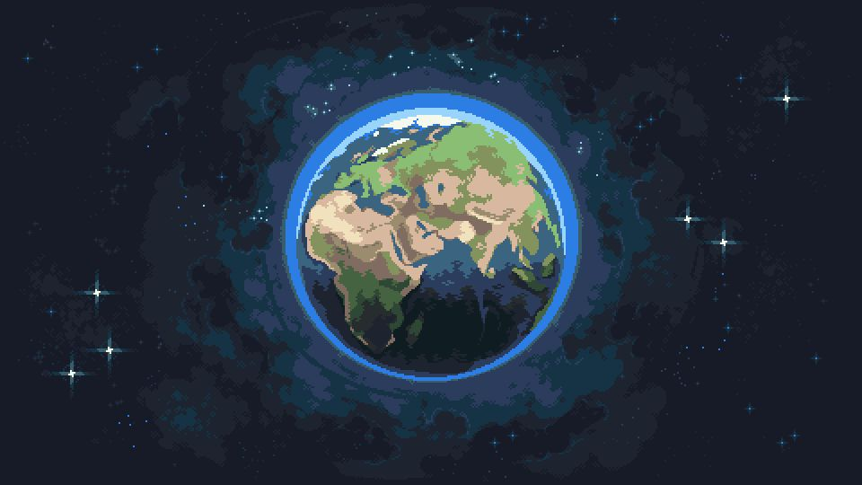

Hướng dẫn
Bắt đầu với Kite: viết script Kotlin cho Paper
Tìm hiểu cách cài đặt plugin Kite và viết script đầu tiên của bạn...
Đọc tiếp →aka ipaperVN
Minecraft Plugin Developer & Skyblock Server Owner
Available for hire
Tôi xây dựng plugin Minecraft chất lượng cao cho máy chủ Paper — tối ưu hiệu năng, dễ tùy chỉnh và thân thiện với quản trị viên.
↻ Kéo để xoay

Xin chào! Tôi là Shinn.Dev (aka ipaperVN) — nhà phát triển plugin Minecraft cho máy chủ Paper, vừa là chủ sở hữu một máy chủ Skyblock. Vì tự vận hành server, tôi hiểu rõ nhu cầu thực tế của quản trị viên: plugin phải mượt, ổn định và dễ bảo trì.
Tôi viết code hoàn toàn bằng Kotlin, từ các plugin đơn giản đến các hệ thống phức tạp như custom items, GUI, vùng bảo vệ, kinh tế skyblock và tối ưu hiệu năng máy chủ.
Bài viết về phát triển plugin và quản trị máy chủ.
Tìm hiểu cách cài đặt plugin Kite và viết script đầu tiên của bạn...
Đọc tiếp →Những tham số JVM và cấu hình quan trọng giúp server của bạn mượt hơn...
Đọc tiếp →Chuyển đổi mã màu cũ sang hệ thống Adventure hiện đại trong plugin...
Đọc tiếp →Bạn cần một plugin theo yêu cầu, muốn hợp tác, hay cần hỗ trợ? Kết nối với tôi qua Discord nhé!